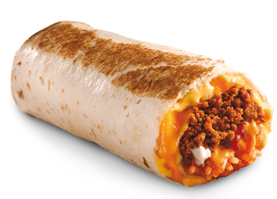

¡Hola!
Comida Mexicana
A culinária mexicana tem uma base milenar com cerca de 8.000 a.C.tem como ingredientes principais, além do milho, o feijão, as pimentas e outros produtos de origem indígenas, como o tomate, a abóbora, o abacate, o cacau e a baunilha, ingredientes tão versáteis e saborosos que compõem as deliciosas receitas mexicanas.
"Bienvenidos - CHAVE.RITO"
A culinária mexicana tem uma base milenar com cerca de 8.000 a.C.
